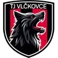

B-mužstvo
IX. liga ObFZ Trnava · 5. miesto z 14

- 9výhier
- 1remíz
- 5prehier
- 37:22skóre
Strelci
- 1Eliáš Viskupič7
- 2Martin Hlavatý6
- 3Marek Daniš5
- 4Peter Petranský5
- 5Alex Pavlík4
- 6Filip Klementovič3
Program
-
21. 3.ne · 15:00
Match dayŠportový klub Naháčdoma · 14. kolo

-
27. 3.so · 15:00
Match dayŠK Cífer 1929 Bvonku · 15. kolo

- 4. 4.ne · 15:30 Match dayTJ Slovan Ostrovdoma · 16. kolo
-
11. 4.ne · 15:30
Match dayOŠK Dolné Lovčicevonku · 17. kolo

-
18. 4.ne · 16:00
Match dayTJ Družstevník Bíňovcedoma · 18. kolo

-
24. 4.so · 16:00
Match dayŠK Pečeňadydoma · 19. kolo

-
2. 5.ne · 16:30
Match dayFK Šulekovovonku · 20. kolo

-
9. 5.ne · 16:30
Match dayTJ Družstevník Vlčkovcedoma · 21. kolo

-
16. 5.ne · 17:00
Match dayTJ Sokol Trstínvonku · 22. kolo

-
22. 5.so · 17:00
Match dayTJ Vinohradník Suchá nad Parnoudoma · 23. kolo

-
30. 5.ne · 17:00
Match dayTJ Družstevník Dolné Dubovévonku · 24. kolo

-
6. 6.ne · 17:00
Match dayFK TJ Družstevník Bukovádoma · 25. kolo

-
13. 6.ne · 17:00
Match dayTJ Družstevník Pastuchovvonku · 26. kolo

Výsledky
-
Fulltime
Výhra, 4:1
TJ Družstevník Pastuchov
8. 11. · doma · 13. kolo
-
Fulltime
Remíza, 2:2
FK TJ Družstevník Buková
1. 11. · vonku · 12. kolo
-
Fulltime
Výhra, 3:0
TJ Družstevník Dolné Dubové
24. 10. · doma · 11. kolo
- Fulltime Výhra, 1:2 TJ Vinohradník Suchá nad Parnou 18. 10. · vonku · 10. kolo
-
Fulltime
Výhra, 4:0
TJ Sokol Trstín
11. 10. · doma · 9. kolo
- Fulltime Prehra, 1:0 TJ Družstevník Vlčkovce 4. 10. · vonku · 8. kolo
-
Fulltime
Prehra, 0:2
FK Šulekovo
27. 9. · doma · 7. kolo
-
Fulltime
Prehra, 4:2
ŠK Pečeňady
20. 9. · vonku · 6. kolo
-
Fulltime
Výhra, 0:3
TJ Družstevník Bíňovce
13. 9. · vonku · 5. kolo
-
Fulltime
Výhra, 7:0
OŠK Dolné Lovčice
6. 9. · doma · 4. kolo
-
Fulltime
Prehra, 0:4
 OŠK Šúrovce
3. 9. · doma · Pohár ObFZ Trnava
OŠK Šúrovce
3. 9. · doma · Pohár ObFZ Trnava
- Fulltime Prehra, 4:2 TJ Slovan Ostrov 29. 8. · vonku · 3. kolo
-
Fulltime
Výhra, 3:2
ŠK Cífer 1929 B
23. 8. · doma · 2. kolo
-
Fulltime
Výhra, 0:1
Športový klub Naháč
16. 8. · vonku · 1. kolo
-
Fulltime
Výhra, 4:1
 MTK Leopoldov
9. 8. · doma · Pohár ObFZ Trnava
MTK Leopoldov
9. 8. · doma · Pohár ObFZ Trnava
Tabuľka
IX. liga ObFZ Trnava
| Poradie | Tím | Z | V | R | P | Skóre | B |
|---|---|---|---|---|---|---|---|
| 1 | 13 | 9 | 2 | 2 | 46:22 | 29 | |
| 2 | 13 | 9 | 1 | 3 | 31:18 | 28 | |
| 3 | 13 | 9 | 0 | 4 | 41:18 | 27 | |
| 4 | 13 | 8 | 2 | 3 | 50:19 | 26 | |
| 5 | 13 | 8 | 1 | 4 | 33:17 | 25 | |
| 6 | TJ Slovan Ostrov | 13 | 7 | 3 | 3 | 38:27 | 24 |
| 7 | 13 | 6 | 3 | 4 | 31:22 | 21 | |
| 8 | TJ Družstevník Vlčkovce | 13 | 5 | 2 | 6 | 46:38 | 17 |
| 9 | 13 | 4 | 3 | 6 | 21:32 | 15 | |
| 10 | 13 | 4 | 1 | 8 | 34:46 | 13 | |
| 11 | 13 | 3 | 4 | 6 | 22:40 | 13 | |
| 12 | 13 | 3 | 1 | 9 | 18:39 | 10 | |
| 13 | 13 | 2 | 1 | 10 | 26:68 | 7 | |
| 14 | TJ Vinohradník Suchá nad Parnou | 13 | 1 | 2 | 10 | 24:55 | 5 |
Súpiska
Hráči, ktorí v roku 2026 nastúpili alebo boli v nominácii (Sportnet).
Brankári
- Štefan Kormúth, číslo 30
- Kristián Lančarič, číslo 1
Obrancovia
- Peter Daniš C, číslo 2
- Marek Daniš, číslo 7
- Ladislav Imre
- Erik Kurinec, číslo 21
- Filip Lančarič, číslo 81
- Tomáš Mažgut, číslo 66
- Marián Puschenreiter, číslo 5
- Ján Urminský, číslo 9
Stredopoliari
- Štefan Bachratý, číslo 11
- Martin Baštrnák, číslo 98
- Jakub Buchan, číslo 3
- Filip Klementovič, číslo 88
- Peter Kováč, číslo 13
- Matúš Machka, číslo 77
- Samuel Nemček, číslo 95
- Alex Pavlík, číslo 99
- Peter Petranský C, číslo 4
Útočníci
- Martin Hlavatý, číslo 10
- Filip Holík
- Tomáš Ivančík, číslo 25
- Dušan Mikulka, číslo 12
- Eliáš Viskupič, číslo 44
Realizačný tím
- TrénerMarek Daniš
- Vedúci mužstvaŠtefan Tanáč
- LekárRastislav Nemček